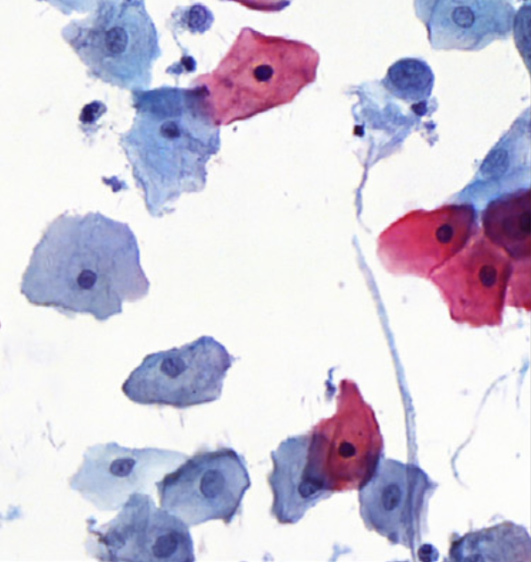
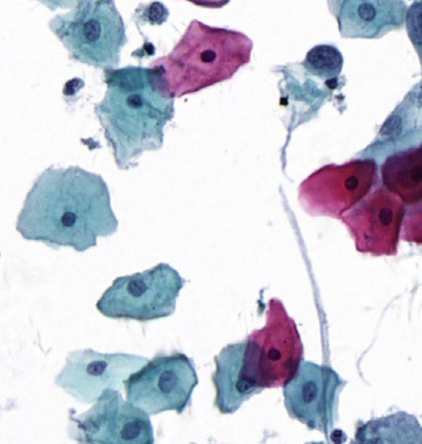

|
I am a master student at University of Science and Technology of China, advised by Prof. Zhiwei Xiong. I obtained my bachelor's degree at Huazhong University of Science and Technology from 2010 to 2014. I received research training at Wuhan National Laboratory for Optoelectronics (HUST), under the supervision of Prof. Shaoqun Zeng. |
{kind=link}
|
I'm interested in computational imaging and 3D vision. More specifically, I focus on the following topics: 1) Computational Imaging with Dual-Lens Systems; 2) SPAD for Photon-Efficient Imaging and None-Line-of-Sight Imaging; 3) Event-Based High-Speed 3D Reconstruction. |
 
|
Xihao Chen, Zhiwei Xiong, Zhen Cheng, Jiayong Peng, Yueyi Zhang, Zhengjun Zha CVPR, 2022 paper The first unsupervised learning method for correspondence estimation from resolution-asymmetric stereo. |
|


|
Xihao Chen Jingya Yu, Shenghua Cheng, Xiebo Geng, Sibo Liu, Wei Han, Junbo Liu, Li Chen, Xiuli Liu, Shaoqun Zeng Computational and Structural Biotechnology Journal, 2021 paper This style normalization method not only helps downstream model genrealize better, but also improve the visual experience of pathologists. |